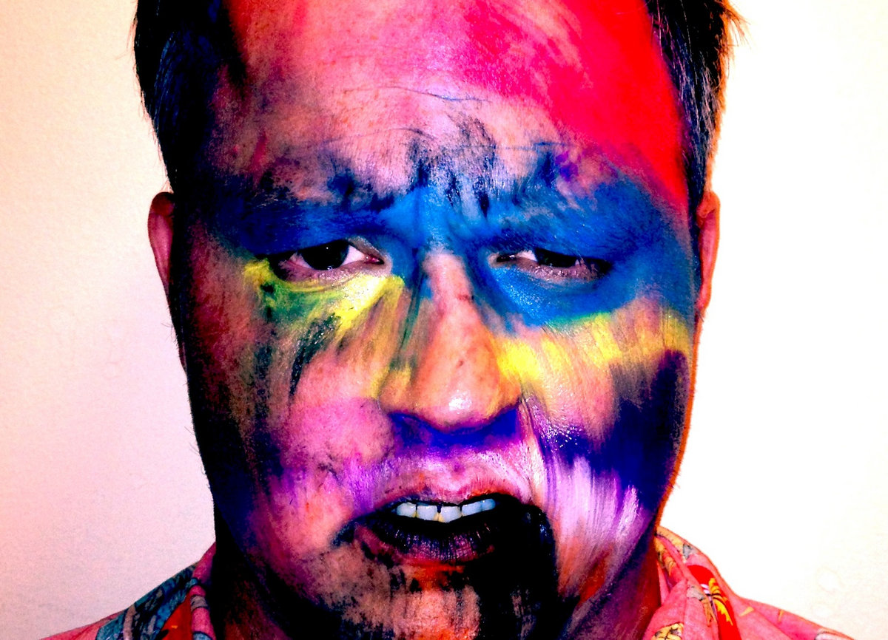
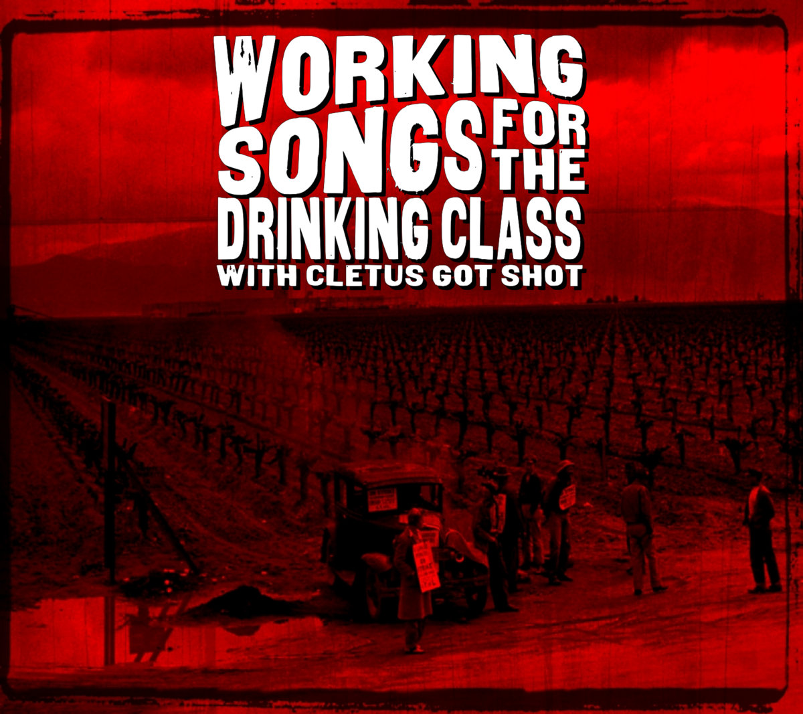
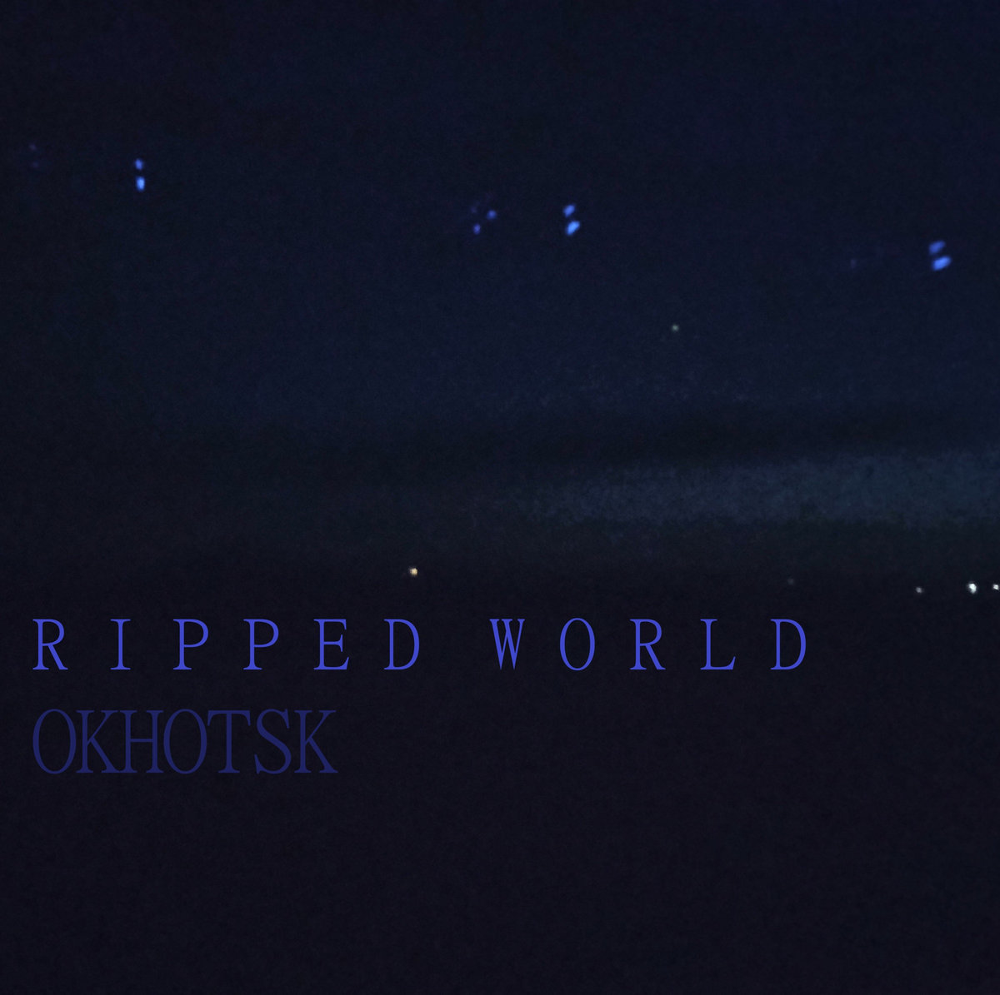

Bandcamp Friday is October 3rd, 2025. I always like to use these opportunities to both find/support Creative Commons music and thought I'd start sharing some of my picks.
If you're interested in CC music, be sure to checkout the tool I made for finding CC music on BC: cc-bc.
I decided to do another regional theme, but this time focusing on music local to me: CC music from Fayetteville, AR.

Such an awesome find - upbeat and urgent music that blends the attitude of garage revival with the sounds of early internet bedroom post-punk. Ursa Major makes me feel like I'm alternating between listening to a friend jam in his garage and rocking out at the best local show I've ever been to.

Working Songs for the Drinking Class is super fun folk punk that makes you want to chug a pint before overthrowing the capitalist machine. Makes me wonder what Pete Seeger would sound like if he existed in the same era as Flogging Molly.

Built on a bedrock of head bobbing beats with layers of unique, textural synths, Ripped World bounces around and subverts recognizable EDM/IDM genres. You're never able to predict what the next song is going to be like as Okhotsk continuously explores new sonic territory.